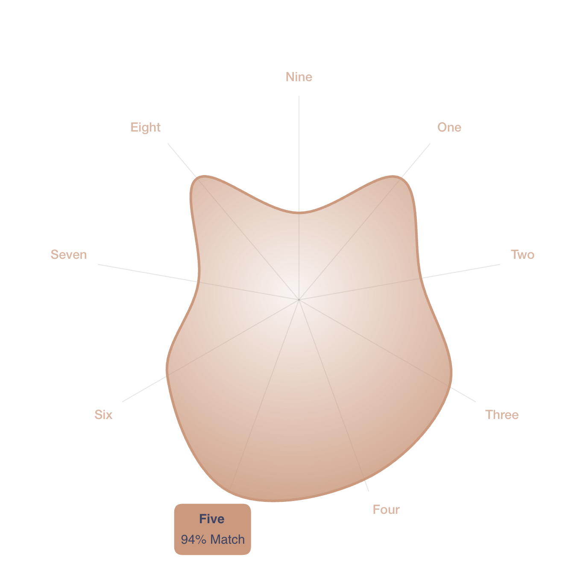

Personality
Foreword
One may choose to disregard their own labels (and bear the consequences, good or bad, of doing so), believing that the labeling system is flawed. However, they cannot claim to be without labels or cannot be defined.
This post aims to briefly introduce three personality models: The Big Five, Myers-Briggs Type Indicator (MBTI), and Enneagram. The Big Five is generally well-regarded and supported by research in the psychology community, whereas the MBTI and Enneagram are viewed more critically, with concerns about their scientific validity and reliability.
But I believe that these tools are all efficient communication protocols, and using them allows me to easily introduce my profile. Because if these models are common knowledge between me and my readers, then my test results will encapsulate a wealth of information about my behavioral habits and thought preferences.
After understanding these models, analyzing the characters in film and literary works will also yield many interesting new perspectives.
Big Five Personality Test
The Big Five personality traits system is a widely accepted framework in psychology, consisting of five broad dimensions that describe human personality:
- Openness (inventiveness and curiosity vs. consistency and caution),
- Conscientiousness (efficiency and organization vs. easy-going and careless),
- Extraversion (outgoing and energetic vs. solitary and reserved),
- Agreeableness (friendly and compassionate vs. challenging and detached), and
- Neuroticism (sensitive and nervous vs. secure and confident).
This model is empirically driven and is considered robust for understanding personality due to its extensive research base, cross-cultural validity, and ability to predict various life outcomes. It’s praised for capturing the complexity of human personality traits in a comprehensive yet flexible manner.
My test result
[My test result in 2023]: SCOAI.
| Abbr. | High | Low | |
|---|---|---|---|
| Extraversion | E | S | R |
| Neuroticism | N | L | C |
| Conscientiousness | C | O | U |
| Agreeableness | A | A | E |
| Openness To Experience | O | I | N |
| Openness To Experience (101) | Conscientiousness (96) | Agreeableness (76) | Neuroticism (67) | Extraversion (76) |
|---|---|---|---|---|
| Imagination (19) | Self-Efficacy (16) | Trust (9) | Anxiety (14) | Friendliness (11) |
| Artistic Interests (15) | Orderliness (18) | Morality (15) | Anger (9) | Gregariousness (9) |
| Emotionality (16) | Dutifulness (13) | Altruism (14) | Depression (9) | Assertiveness (15) |
| Adventurousness (17) | Achievement-Striving (17) | Cooperation (15) | Self-Consciousness (12) | Activity Level (16) |
| Intellect (20) | Self-Discipline (16) | Modesty (10) | Immoderation (12) | Excitement-Seeking (14) |
| Liberalism (14) | Cautiousness (16) | Sympathy (13) | Vulnerability (11) | Cheerfulness (11) |
In the first row, each item has a full score of 120, while in the other rows, each item has a full score of 20.
The detailed description of each dimension can be found in [My Test Result in 2023].
Myers-Briggs Type Indicator (MBTI)
The Myers-Briggs Type Indicator (MBTI) is another popular personality framework, particularly in non-academic settings like business and career counseling. It categorizes people into 16 distinct personality types based on four dichotomies:
- Introversion vs. Extraversion. This dimension describes how individuals draw and expend their energy. Extraverts (E) are energized by interaction with others and the external world. They tend to be sociable, outgoing, and more comfortable in groups or social situations. Introverts (I), in contrast, are energized by spending time alone or in quiet environments. They are often reflective, reserved, and more comfortable working independently or in smaller groups. This preference doesn’t necessarily determine social skills or shyness; it’s more about where one gets their energy from.
- Sensing vs. Intuition. This dimension indicates how individuals prefer to gather information. People who prefer Sensing (S) focus on the present and concrete information gained from their senses. They are detail-oriented, practical, and prefer to deal with facts and real-world applications. Intuitive types (N), however, are more focused on possibilities and what might be. They enjoy thinking about the future, abstract concepts, and the big picture. They value imagination and innovation more than practical applications.
- Thinking vs. Feeling. This dimension describes how people prefer to make decisions. Thinkers (T) make decisions based on logic and objective analysis. They value principles, consistency, and impersonal truth, often focusing on the task rather than people. Feelers (F), on the other hand, are more concerned with harmony and the well-being of others. Their decisions are influenced more by personal values and the impact on people. They are empathetic, compassionate, and tend to prioritize relationships in their decision-making process.
- Judging vs. Perceiving. This dimension relates to how individuals prefer to organize their lives. Judging types (J) like structure, firm decisions, and clear rules. They prefer planning and organizing their lives and tend to be decisive, efficient, and task-focused. Perceiving types (P), conversely, prefer to remain open to new information and options. They are more spontaneous, flexible, and adaptable. Perceivers are less structured and more comfortable adapting to changes and exploring various possibilities.
Furthermore, there is a fifth letter in some MBTI representations, such as “INTJ-T,” originates from the 16Personalities framework and represents an additional dimension known as “Identity,” which is not part of the original MBTI model.
- Assertive vs. Turbulent. This dimension is divided into “Assertive” (A) and “Turbulent” (T) traits. Assertive individuals are typically confident, relaxed, and resistant to stress, maintaining a stable level of emotional resilience. In contrast, Turbulent individuals are more likely to be self-conscious, sensitive to stress, and driven by a desire for improvement, often experiencing wider emotional fluctuations and a strong sense of ambition. This Assertive/Turbulent aspect, blending elements from the Big Five personality traits, adds another layer to personality assessment, offering a nuanced view of one’s overall disposition and reaction to stress and change.
Developed from Carl Jung’s theory of psychological types, MBTI is often used for personal development, career planning, and team building. However, it has faced criticism from the academic psychology community due to concerns about its scientific validity, reliability, and lack of empirical support, as people may receive different type designations upon retaking the test.
My test result
[My test result in 2023]: INTJ-T (The Turbulent Architect).
- Introverted, Intuitive, Thinking, Judging, and Turbulent;
- Strategy: Constant Improvement;
- Dominant (Jungian) Cognitive Functions: Introverted Intuition (Ni) and Extraverted Thinking (Te).
Jungian cognitive functions
The MBTI is heavily influenced by the theories of Swiss psychiatrist Carl Jung, particularly his concept of cognitive functions.
Jung proposed a theory of psychological types in his 1921 work “Psychological Types.” He introduced the concepts of introversion and extraversion as the main orientations of personality and added four psychological functions through which people experience the world: thinking, feeling, sensation, and intuition. These functions could operate in either an extraverted or introverted mode, leading to a total of eight distinct functions in his theory.
Cognitive functions, also referred to as psychological functions, as described by Carl Jung in his book Psychological Types, are particular mental processes within a person’s psyche that are present regardless of common circumstance. This is a concept that serves as one of the foundations for his theory on personality type. In his book, he noted four main psychological functions: thinking, feeling, sensation, and intuition. He introduced them with having either an internally focused (introverted) or externally focused (extraverted) tendency which he called “attitudes”. He also categorizes the functions as either rational (thinking and feeling) or irrational (intuition and sensation). — Wikipedia.
The MBTI was developed by Katharine Cook Briggs and her daughter Isabel Briggs Myers in the 1940s. They were influenced by Jung’s theory and sought to apply it in a more practical, accessible way. While they retained Jung’s basic concepts of extraversion/introversion and the four functions (thinking, feeling, sensing, and intuition), they added a new dimension: Judging vs. Perceiving. This was not explicitly part of Jung’s original theory but was inferred from his descriptions of how people use their judging (thinking and feeling) and perceiving (sensing and intuition) functions.
In MBTI, the combination of Extraversion vs. Introversion with the four functions results in eight possible cognitive functions (e.g., extraverted thinking, introverted feeling, etc.). These functions are used to determine the 16 MBTI types, with each type having a primary function that dominates their personality. The MBTI also considers secondary and tertiary functions in its personality descriptions, attempting to create a more holistic view of each personality type. In summary, the MBTI is an adaptation and extension of Carl Jung’s theory of cognitive functions. It maintains the core of Jung’s ideas but simplifies and expands them to create a more structured and easily applicable personality typology. However, it’s important to note that the MBTI’s interpretation and application of Jung’s theories are not without criticism, particularly from academic psychologists who question the MBTI’s scientific validity and reliability.
 Table 1 from Wikipedia.
Table 1 from Wikipedia.
 Table 2 from Wikipedia.
Table 2 from Wikipedia.
{kind=link}

Introverted Intuition (Ni) is an information-gathering function, but unlike its counterpart, Extroverted Intuition, it processes information in a more internal and reflective manner. Individuals who primarily use Introverted Intuition tend to focus on the future, relying on insights and impressions rather than concrete facts. They often perceive patterns and connections that are not immediately obvious to others. Ni users are typically deep thinkers, valuing concepts, theories, and abstract ideas. They have a natural inclination towards understanding complex systems and are often driven by a vision or a sense of where things are heading. This introspective function can sometimes lead them to seem detached from the present, as they are more engaged with their internal world of ideas and possibilities.
Extroverted Thinking (Te) is an extroverted function, meaning it is oriented towards the external world. Te is logical, systematic, and focused on organizing and structuring the environment. Individuals with a dominant Extroverted Thinking function are typically very good at setting goals, making plans, and implementing strategies. They prioritize efficiency, productivity, and are often drawn to positions of management or leadership due to their ability to make objective, logical decisions and to create order and consistency in their surroundings. Te users are practical and straightforward, preferring clear communication and measurable outcomes. They excel in taking complex ideas and organizing them in a way that is understandable and actionable, often thriving in environments where their skills in organization and leadership can be put to good use.
Introverted Feeling (Fi) is featured in the Myers-Briggs Type Indicator (MBTI). Fi is a decision-making function that is focused inwardly, dealing with emotions and values. Individuals who primarily use Introverted Feeling process their feelings internally and place a high emphasis on personal, often subjective, values and morals. They tend to be guided by these internal values when making decisions, rather than external sources of morality or societal expectations. Fi users are often very aware of their own emotions and seek to understand and align their actions with their inner sense of integrity and authenticity. This can make them seem reserved or private, as they prefer to reflect deeply on their feelings rather than express them openly. They are often empathetic and compassionate, with a strong sense of individualism and a deep commitment to living in harmony with their personal ethical code.
Extroverted Sensing (Se) is a perceiving function that focuses on the external world, emphasizing the present moment and concrete sensory experience. Individuals with a dominant Extroverted Sensing function are typically very aware of their physical environment and enjoy engaging with it. They are often pragmatic and realistic, preferring direct interaction with the world around them. Se users tend to be action-oriented, enjoying activities that involve sensory stimulation and physical engagement. They are often adept at responding to immediate situations and can be very spontaneous and adaptable. This focus on the here and now can sometimes lead to a lesser emphasis on planning for the future or reflecting on the past. Extroverted Sensing is associated with a love for aesthetics, a keen awareness of their surroundings, and a preference for hands-on experiences.
Enneagram
The Enneagram is a personality system that describes nine primary personality types, each with its own set of characteristics, motivations, fears, and desires. Its origins are more spiritual and mystical, tracing back to ancient traditions. The Enneagram has become popular in various self-help and spiritual contexts and is sometimes used in counseling for personal and relational growth. Despite its popularity in these areas, the Enneagram is viewed with skepticism by the mainstream psychology community due to its lack of empirical evidence and scientific grounding. Critics point out that its categories are too vague and subjective, making it difficult to validate and study scientifically.
This website provides a great introduction to the various types of the Enneagram.
My test result
[My test result in 2023]: Type 5 with a 4-Wing.
 My test result at this website.
{kind=link}
Fives (The Investigators) are alert, insightful, and curious. They are able to concentrate and focus on developing complex ideas and skills. Independent, innovative, and inventive, they can also become preoccupied with their thoughts and imaginary constructs. They become detached, yet high-strung and intense. They typically have problems with eccentricity, nihilism, and isolation. At their Best: visionary pioneers, often ahead of their time, and able to see the world in an entirely new way.
- Basic Fear: Being useless, helpless, or incapable
- Basic Desire: To be capable and competent
- Enneagram Five with a Four-Wing: “The Iconoclast”
- Enneagram Five with a Six-Wing: “The Problem Solver”
Key Motivations: Want to possess knowledge, to understand the environment, to have everything figured out as a way of defending the self from threats from the environment.
When moving in their Direction of Disintegration (stress), detached Fives suddenly become hyperactive and scattered at Seven. However, when moving in their Direction of Integration (growth), avaricious, detached Fives become more self-confident and decisive, like healthy Eights.
— From this webpage.
Tritype
The tritype theory suggests that while individuals have a primary Enneagram type, they also exhibit significant characteristics of two other types. These three types – one from each of the Enneagram’s centers of intelligence (Heart/Feeling, Head/Thinking, Gut/Instinct) – combine to form a person’s tritype. For example, someone could have a tritype of 4-7-1, meaning their primary type is in the Heart center (type 4), but they also strongly identify with a type in the Head center (type 7) and the Gut center (type 1).
My tritye is 548.
Fours (The Individualists) are self-aware, sensitive, and reserved. They are emotionally honest, creative, and personal, but can also be moody and self-conscious. Withholding themselves from others due to feeling vulnerable and defective, they can also feel disdainful and exempt from ordinary ways of living. They typically have problems with melancholy, self-indulgence, and self-pity. At their Best: inspired and highly creative, they are able to renew themselves and transform their experiences.
Basic Fear: That they have no identity or personal significance Basic Desire: To find themselves and their significance (to create an identity) Enneagram Four with a Three-Wing: “The Aristocrat” Enneagram Four with a Five-Wing: “The Bohemian”
Key Motivations: Want to express themselves and their individuality, to create and surround themselves with beauty, to maintain certain moods and feelings, to withdraw to protect their self-image, to take care of emotional needs before attending to anything else, to attract a “rescuer.”
When moving in their Direction of Disintegration (stress), aloof Fours suddenly become over-involved and clinging at Two. However, when moving in their Direction of Integration (growth), envious, emotionally turbulent Fours become more objective and principled, like healthy Ones.
— From this webpage.
Eights (The Challengers) are self-confident, strong, and assertive. Protective, resourceful, straight-talking, and decisive, but can also be ego-centric and domineering. Eights feel they must control their environment, especially people, sometimes becoming confrontational and intimidating. Eights typically have problems with their tempers and with allowing themselves to be vulnerable. At their Best: self- mastering, they use their strength to improve others’ lives, becoming heroic, magnanimous, and inspiring.
Basic Fear: Of being harmed or controlled by others Basic Desire: To protect themselves (to be in control of their own life and destiny) Enneagram Eight with a Seven-Wing: “The Maverick” Enneagram Eight with a Nine-Wing: “The Bear”
Key Motivations: Want to be self-reliant, to prove their strength and resist weakness, to be important in their world, to dominate the environment, and to stay in control of their situation.
When moving in their Direction of Disintegration (stress), self-confident Eights suddenly become secretive and fearful at Five. However, when moving in their Direction of Integration (growth), lustful, controlling Eights become more open-hearted and caring, like healthy Twos.
— From this webpage.